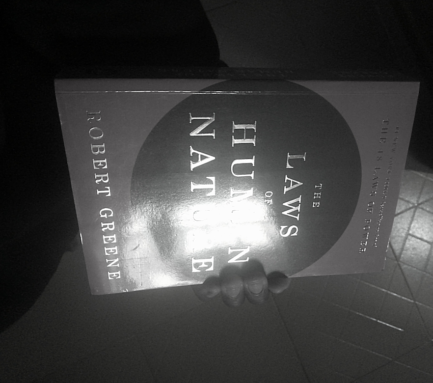

I was writing about thought, then I had a thought which led to another thought. Next thing I knew, while looking at my environment, I saw something which also led to a thought. Then I started laughing because I thought, why did that thought lead to that particular thought and not another? And why did that object I saw in my environment lead to that particular thought and not another? And then I smiled because it's kind of like experiencing the "LLM similarity concept in real-time." Even though the human process is beyond that, LLMs are kind of close.
Dr. Fei-Fei Li was right - LLMs alone can't lead to AGI. While her approach may not be the final solution, it is a major piece of the missing puzzle.
Like the Yoruba people will say:
"Oju ni oba ara" ~ Yoruba proverbOne of the goals of AGI is to attain a human level of creativity. Yeah, currently we can use LLMs to do certain types of creative work, but...
Human creativity - I think creativity is not just about intelligence alone; it's something that requires the whole self.
Like Robert Greene said in his book Mastery:
You must begin by altering your very concept of creativity and by trying to see it from a new angle. Most often, people associate creativity with something intellectual, a particular way of thinking. The truth is that creative activity is one that involves the entire self—our emotions, our levels of energy, our characters, and our minds. To make a discovery, to invent something that connects with the public, to fashion a work of art that is meaningful, inevitably requires time and effort. ~ Robert Greene (Mastery)Anyway, since Dr. Fei-Fei Li goal with World Labs is having an: "AI that augments human expertise, accelerates human discovery, and amplifies human care—not replacing the judgment, creativity, and empathy that are central for being humans."
I won't make an argument.